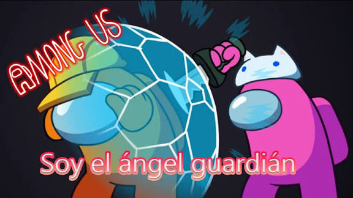

1. Historia, Contexto y Rol Operativo en la Misión
En los primeros años de Among Us, ser la víctima inaugural de un impostor condenaba al usuario a una experiencia de juego sumamente pasiva: el tripulante asesinado se convertía en un fantasma silencioso cuya única interacción permitida era flotar por los pasillos completando sus tareas pendientes, sin poder comunicarse ni influir en los combates que se libraban en la nave.
Con la actualización oficial de roles de 2021, Innersloth transformó radicalmente esta dinámica al crear la investidura del Ángel Guardián. El primer tripulante caído (o todos los tripulantes fallecidos, según los parámetros configurados en la sala) trasciende su condición de víctima y adquiere la capacidad de canalizar energía defensiva desde el plano etéreo. Flotando a través del acero, mamparos y el vacío espacial sin barreras de colisión, el Ángel Guardián se convierte en el protector invisible de sus compañeros vivos.
Su poder fundamental es el despliegue de un escudo protector translúcido que envuelve a un compañero durante una breve ventana temporal. Si un impostor intenta descargar un golpe mortal o disparar su lengua punzante sobre el tripulante protegido, el impacto choca contra la barrera divina, quebrándose en mil pedazos luminosos. Esta intercepción no solo salva la vida del inocente, sino que dispara el tiempo de recarga (Kill Cooldown) del asesino, dejándolo completamente expuesto y desarmado.
2. Análisis de Mecánicas, Barrera de Luz y Cooldown
El Ángel Guardián opera con facultades que desafían la muerte física:
2.1. Escudo Protector [Activa Espectral]
Proyecta un aura dorada luminosa sobre un tripulante vivo. Si un impostor intenta atacarlo, el golpe se anula por completo sin causarle daño. Esta capacidad ejerce un impacto directo sobre la dinámica de supervivencia en la nave (Duración Escudo: 10 a 20 Segundos), obligando tanto a aliados como a adversarios a recalcular constantemente sus rutas de tránsito y tiempos de reacción.
2.2. Castigo de Cooldown [Penalización Hostil]
Al estrellarse contra el escudo, el impostor agota su botón de ataque sin lograr la baja, quedando con su temporizador de muerte bloqueado. Esta capacidad ejerce un impacto directo sobre la dinámica de supervivencia en la nave (Efecto: Disparo de Kill Cooldown), obligando tanto a aliados como a adversarios a recalcular constantemente sus rutas de tránsito y tiempos de reacción.
2.3. Vuelo Libre Omnipresente [Pasiva Fantasma]
Atraviesa paredes y puertas selladas a máxima velocidad para interceptar agresiones en cualquier rincón del mapa. Esta capacidad ejerce un impacto directo sobre la dinámica de supervivencia en la nave (Enfriamiento (CD): 40s a 60s tras escudo), obligando tanto a aliados como a adversarios a recalcular constantemente sus rutas de tránsito y tiempos de reacción.
3. Ventajas Estratégicas y Puntos Vulnerables
3.1. Ventajas Operativas y Fortalezas Estratégicas
El despliegue eficiente de este rol aporta ventajas sustanciales que permiten maximizar el control del mapa y acelerar los objetivos del equipo:
- Ventaja táctica: Permite intervenir directamente en la partida incluso después de haber muerto.
- Ventaja táctica: Inmunidad total: al ser un espíritu, no puede volver a ser dañado ni asesinado.
- Ventaja táctica: Salva a roles estratégicos clave (Científico, Detective, Juez) en instantes críticos.
- Ventaja táctica: Siembra el pánico psicológico entre los impostores al ver rebotar sus ataques.
3.2. Vulnerabilidades Críticas y Limitaciones Operativas
No obstante, el operador se encuentra sujeto a vulnerabilidades severas que los adversarios procurarán capitalizar en los momentos de mayor tensión:
- Punto vulnerable: Tiempo de recarga sumamente prolongado (habitualmente entre 50 y 60 segundos).
- Punto vulnerable: Incapaz de comunicarse o escribir en el chat durante las reuniones de asamblea.
- Punto vulnerable: Si aplica el escudo demasiado pronto, se desvanecerá antes del golpe del asesino.
- Punto vulnerable: Requiere anticipar el ataque sin saber con absoluta certeza quién es el impostor.
4. Estrategia Avanzada y Sociometría del Debate
4.1. La Táctica de la Escolta Silenciosa
Como Ángel Guardián, no te quedes inmóvil. Sigue de cerca a los jugadores que exhiban comportamientos sospechosos (fingir tareas que no mueven la barra colectiva o rondar ductos de ventilación). En el instante en que veas que ese jugador acelera hacia un tripulante en un pasillo ciego, ¡dispara el escudo protector sin dudarlo!
4.2. El Efecto Revelador del Escudo
Cuando un tripulante ve que su cuerpo emite chispas protectoras doradas y el asesino retrocede en pánico al fallar su golpe, el inocente comprende de inmediato que su acompañante es un impostor y correrá a tocar el botón de emergencia para denunciarlo ante todos.
5. Perfil Operativo y Parámetros Técnicos
Desde la perspectiva de diseño lúdico y balance de juego estandarizado, este personaje se caracteriza por los siguientes parámetros oficiales normados:
- Facción: Tripulación.
- Tipo de Rol: Soporte Espectral.
- Activación: Post-Mórtem.
- Duración Escudo: 10s a 20s.
- Enfriamiento (CD): 45s a 60s.
- Interacción Chat: Silenciado (Fantasma).
- Dificultad: Intermedia.
6. Recursos Multimedia Obligatorios: Sonido y Vídeo
Sonido de Activación del Escudo
Frecuencia armónica de proyección del aura protectora espectral.
Vídeo Demostrativo del Ángel Guardián
Intercepción de un asesinato en tiempo real y ruptura del ataque del impostor.
7. Archivos Gráficos y Evidencias Visuales
